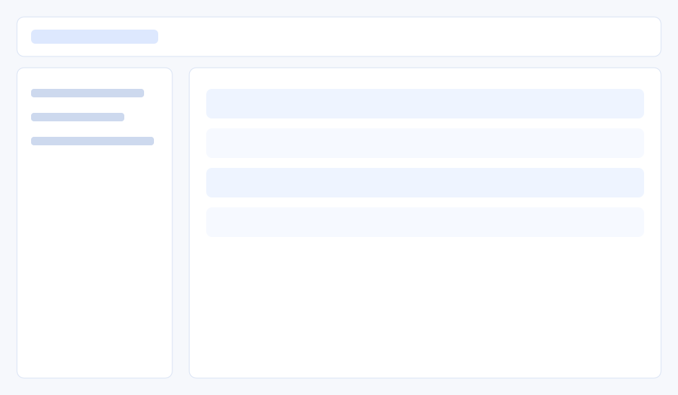
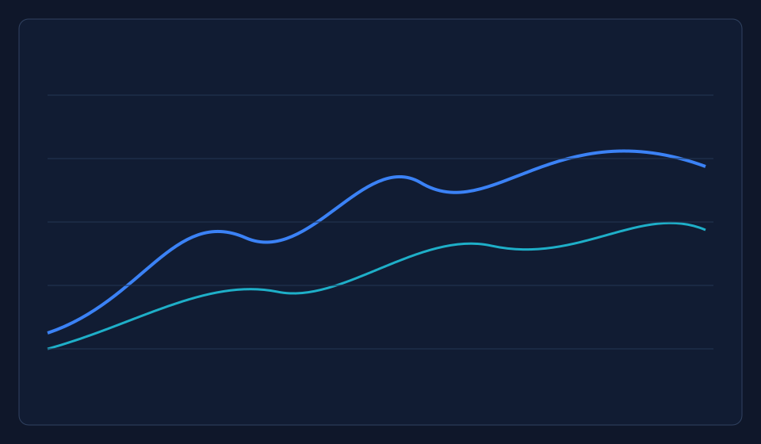
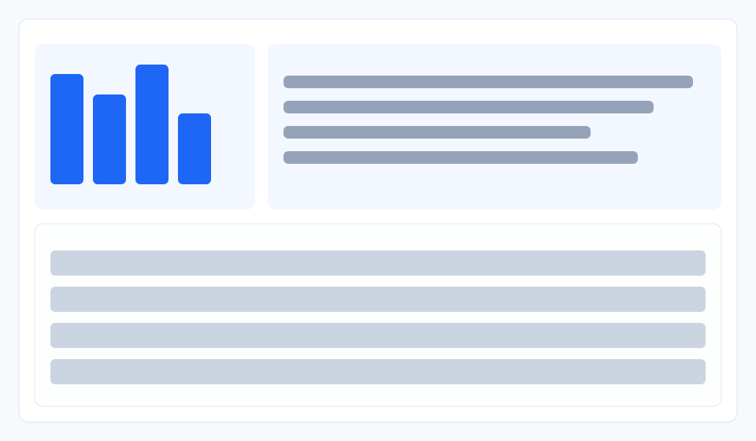

统一数据接入
兼容 SigMF 与 HDF5 等常见无线数据格式，统一加载流程，减少脚本适配。
RFview 面向算法工程师、信号处理工程师与数据平台团队，提供从原始射频文件导入、元数据管理、可视化分析到标准化导出的完整工作流，帮助团队显著降低数据准备与协作成本。
兼容 SigMF 与 HDF5 等常见无线数据格式，统一加载流程，减少脚本适配。
自动抽取采样率、中心频点、标签等关键信息，便于筛选和治理。
针对大体量 IQ 数据进行分块读取与缓存优化，提升分析响应速度。
支持样本统计、注释管理与质量校验，帮助数据集可追溯、可复现。
通过频谱、时域/频域图与分布看板，快速发现异常与样本偏差。
支持插件化能力扩展，适配不同团队的算法链路与平台集成需求。



RFview 让团队把精力从“处理数据”转移到“验证算法与产出价值”。